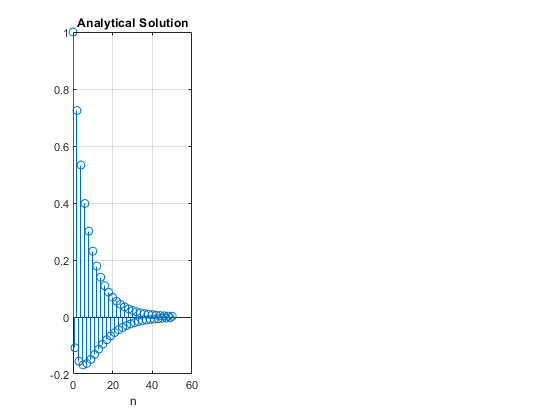
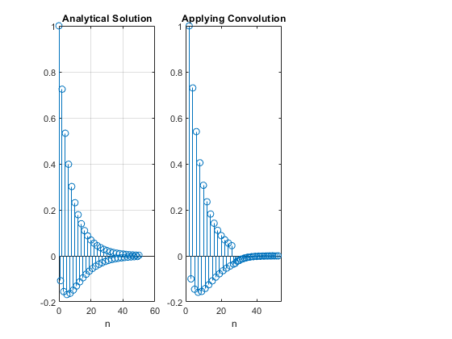
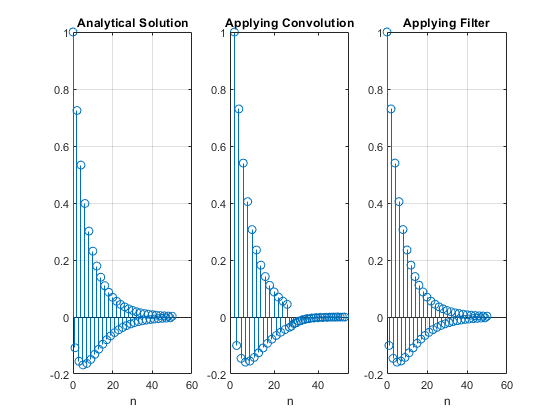

Contents
Diffence Equation using Convolution
clc;
close all;
clear all;
Given Signals
n = 0:50;
x = (0.8).^n;
h = (-0.9).^n;
Analytical solution of Y
Y = [];
for k=0:50
sum = 0;
for i=0:k
sum = sum + (-0.88)^i;
end
Y(i+1) = ((-0.9)^k) * sum;
end
subplot(1, 3, 1);
stem(n, Y);
grid on;
xlabel("n");
title("Analytical Solution");

Using own Functions to calculate Convolution
n1 = 1:26;
n2 = 1:26;
x_mini = x(1:26);
h_mini = h(1:26);
max_length = length(x_mini)+length(h_mini)-1;
[x_mini, h_mini] = pad(x_mini, h_mini);
[h_mini, n2]= fold(h_mini, n2);
result = zeros(1,max_length);
for i=1:max_length
result(i)=add(x_mini, h_mini,i);
end
n2 = -fliplr(n2);
n_new = min(n1)+ min(n2): max(n1)+max(n2);
subplot(1, 3, 2);
stem(n_new, result);
xlabel("n");
title("Applying Convolution");
xlim([n_new(1)-2 n_new(length(n_new))+2]);

Using Filter function
Y_filter = filter([1], [1, 0.9], x);
subplot(1, 3, 3);
stem(n, Y_filter);
grid on;
xlabel("n");
title("Applying Filter");

Helper functions
function [h,n2] = fold(h,n2)
h=fliplr(h);n2=-1.*fliplr(n2);
end
function [padded_x,padded_h] = pad(x_signal,h_signal)
l1 = length(x_signal);
l2 = length(h_signal);
convolved_length = l2+l2-1;
padded_x = zeros(1,convolved_length);
padded_h = zeros(1,convolved_length);
padded_x(1:l1)=x_signal;
padded_h(1:l2)=h_signal;
end
function [y]=multiply(x,h,n,k)
y=0;
l_h= length(h);
y=x(k)*h(l_h-n+k);
end
function [y,n]=add(xk,hk,n)
y=0;
for i=1:n
y=y+multiply(xk,hk,n,i);
end
end